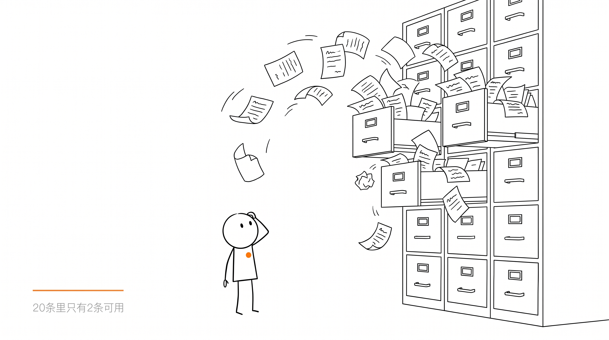
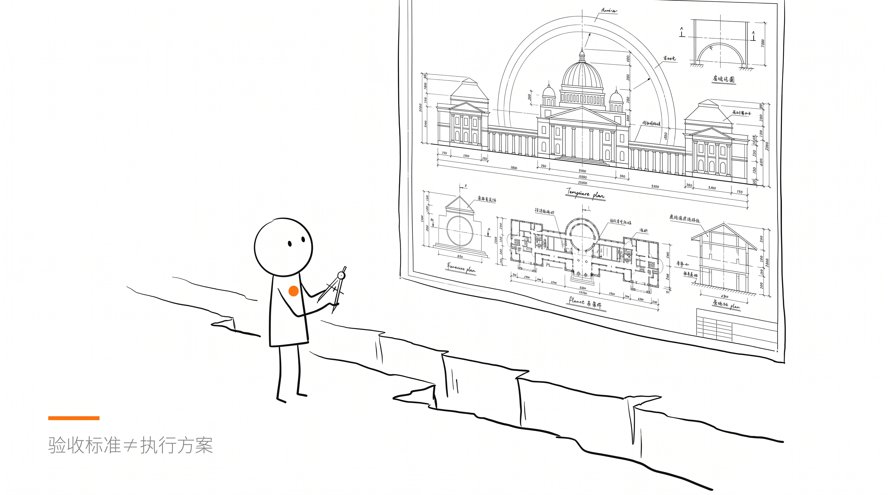
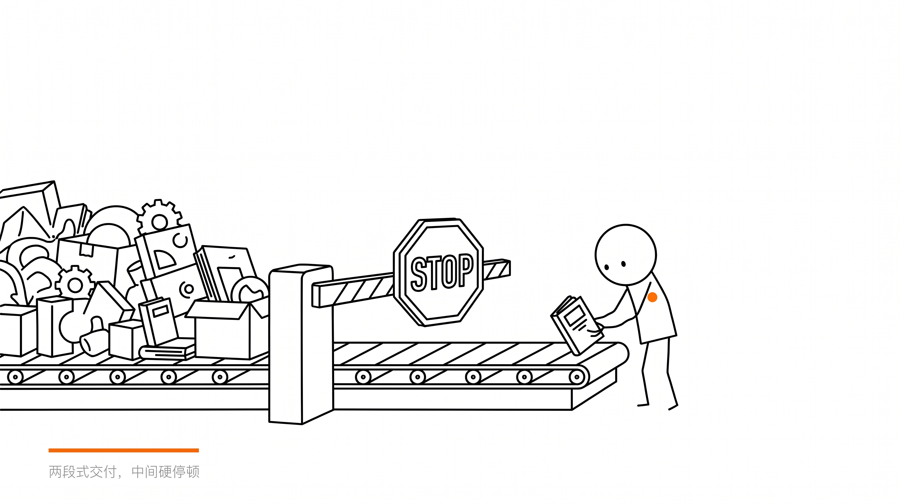
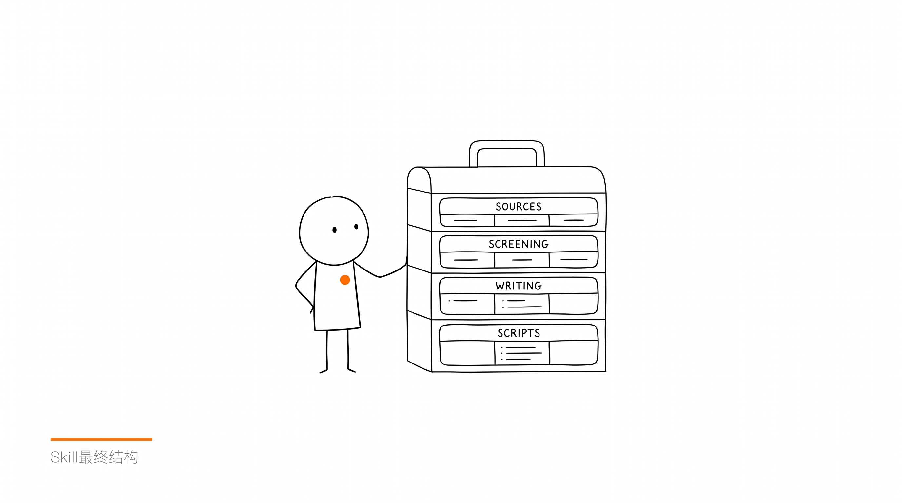
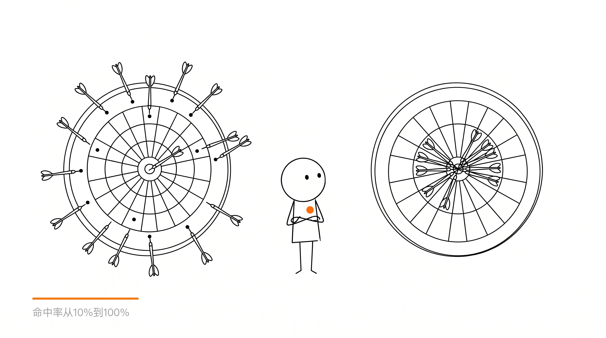
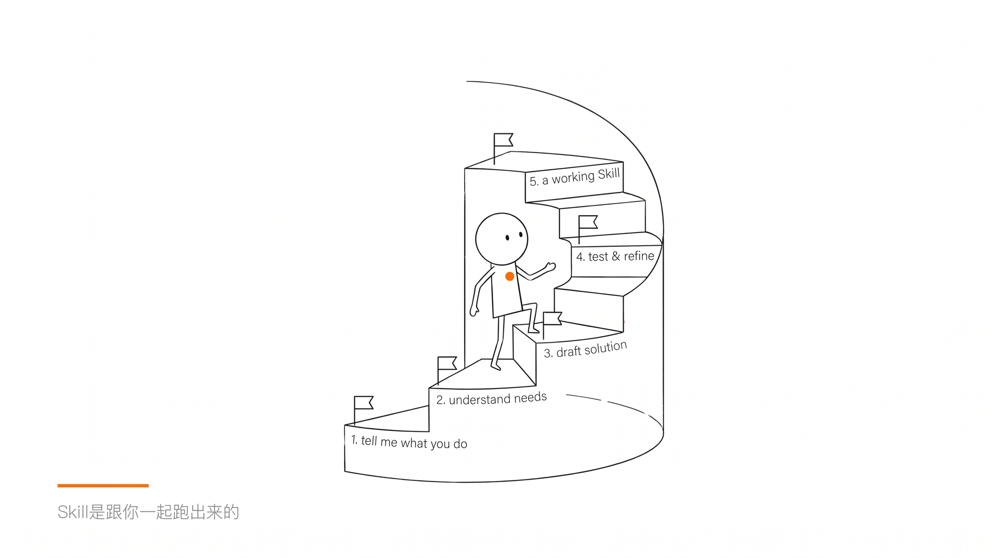
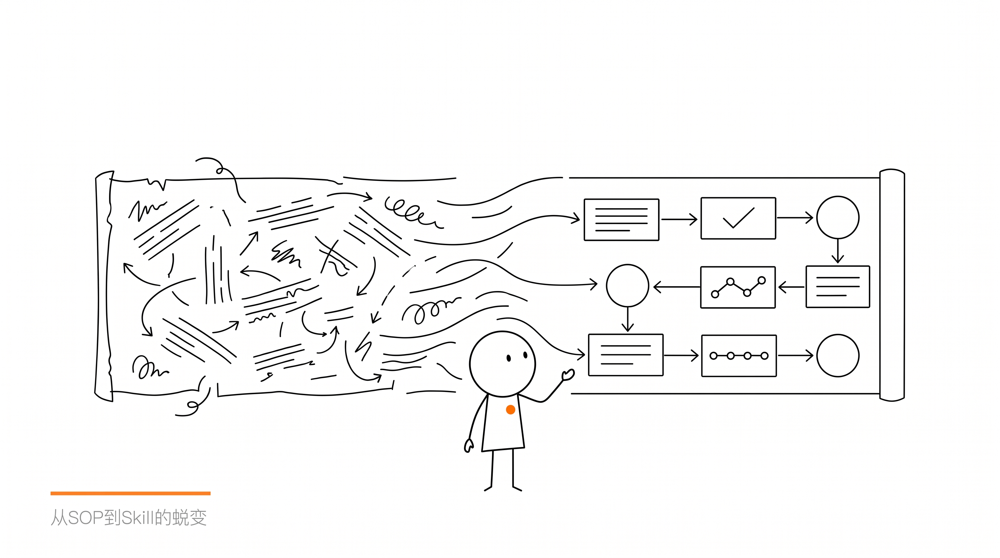

从SOP诊断到Skill落地全过程

搭把手计划的第一个 case。
Momo 做建筑数智化咨询,每月要输出一份行业资讯月报。他不是 AI 小白--已经会用 Agent 和 Skill,也自己写了一份4000字的完整 SOP。
他把 SOP 喂给 AI 执行月报采集。
结果:20条里只有2条可用。

核心判断:
这份 SOP 是验收标准,不是执行方案。
"优先检索:中建、中铁、中交等央国企官网"
AI 不知道访问哪个网址、用什么方式抓。方向对了,但缺"怎么做"。
给每个来源写具体网址+抓取方式+实测验证。
"正文建议:18-22条"
合格的只有8条?AI 就降低标准硬凑18条。数量要求和质量要求冲突时,AI 优先满足数量。
删掉条数指标。满足标准全收,不满足一条都不塞。
公众号抓取、付费论文、反爬网站--SOP 没处理这些盲区,AI 就假装能做到,输出错误结果。
明确标注做不到的事,设计替代方案。做不到就声明,不假装。




“你不需要先写好SOP再给AI。讲清楚这件事，在实践中一轮一轮调。Skill是跟你一起跑出来的。”

缺执行指令的SOP喂给AI一定出垃圾
做不到就声明,不假装
AI做粗筛,人做终选
API/RSS不需要AI推理
偏好写进规则,下次自动继承